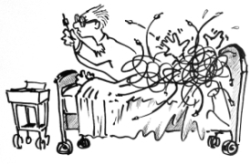
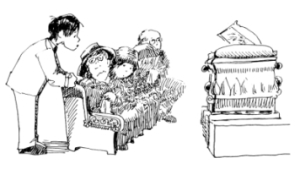

This page has usage examples for the following words:
angina pectoris 狭心症 きょうしんしょう
bypass operation, bypass surgery バイパス手術 バイパスしゅじゅつ
chest pain 胸痛 きょうつう
cardiac disease, heart disease 心臓病 しんぞうびょう
cardiac arrest heart failure 心臓麻痺 しんぞうまひ
Cardiologist 心臓専門医 しんぞうせんもんい
dyspnea 呼吸困難 こきゅうこんなん
heart attack 心臓発作 しんぞうほっさ
ischemic heart disease 虚血性心臓病 きょけつせいしんぞうびょう
myocardial infarction 心筋梗塞 しんきんこうそく

I experienced (had) a sharp chest pain while playing golf.
ゴルフをしていて、心臓に刺すような激痛が走りました。
ゴルフをしていて、しんぞうに さすような げきつうが はしりました。
When the pain subsided within ___minutes, I continued to play.
〇〇分くらいでおさまったので、その後も、続けてプレイしました。
〇〇ふんくらいで おさまったので、そのあとも、つづけてプレイしました。
I have had two bypass surgeries.
過去に、バイパス手術を２回しています。
かこに、バイパスしゅじゅつを ２かいしています。
My father had a heart attack and almost died.
父が心筋梗塞の一歩手前で命拾いをしました。
ちちが しんきんこうそくの いっぽてまえで いのちびろいをしました。
Now, he tends to stay indoors because he's depressed.
しかし、またいつ発作が起るかと、このごろでは、すっかり気弱になっています。（気落ちしています。）
しかし、またいつほっさがおきるかと、このごろでは、すっかりきよわになっています。（きおちしています。）
My heart palpitates and I am out of the breath after even the mildest exercise.
軽い運動をしただけで、動悸が激しくなって息切れがします。
かるいうんどうをしただけで、どうきがはげしくなって いきぎれがします。
I am worried that I have serious heart disease.
心臓に重大な病気がひそんでいるのではないかと心配で・・・
しんぞうに じゅうだいな びょうきが ひそんでいるのではないかと しんぱいで・・・
Have you experienced any particular symptom?
これまでに何か兆候がありましたか？
これまでに なにかちょうこうがありましたか？
A conversation between a patient and a doctor about ischemic heart disease
Patient:
An acquaintance who was in early old age and very active, physically and socially, passed away due to heart disease. I can hardly believe that he is dead because he looked so healthy.
体力もあり健康そのもので、社会的にも活躍していた初老の男性が、心臓疾患のために亡くなりました。つい先日までのお元気な姿を思い出すと、あまりに突然のことで信じられません。
Doctor:
Judging from his age, it appears that he died of ischemic heart disease. Ischemic heart disease occurs when the heart itself is not supplied with sufficient blood. The disease is the major cause of deaths in developed countries. He must have had some symptoms such as chest pain and dyspnea in the past, but they were so mild that he didn’t pay particular attention. In fact, some people have no symptoms. When chest pain lasts longer, myocardial infarction is the most possible. What is the most critical is to receive medical attention within 1 hour of the occurrence of chest pain. Needless to say, it is important to have regular physical checkups (particularly, blood pressure, body weight and blood tests), avoid smoking and do proper amount of exercise.
お話の男性は年齢から察すると、おそらく虚血性心疾患のためにお亡くなりになったと思われます。これは心臓自体に必要な血液が充分に供給されないためにおきる病気で、先進国においては主要な死因となっています。おそらく、この方は、これまで胸痛や呼吸困難等の症状が非常に軽かったために、気がつかずにおられたのでしょう。中には、全く症状がないというケースもあります。胸痛が長引く場合には、心筋梗塞が最も疑われます。胸痛がおきて一時間以内に治療を受けることが最も重要とされています。成人病検診（特に、血圧・体重・血液検査）を定期的に受ける、禁煙、適度の運動が大切な事は言うまでもありません。

My two cents 一言おせっかい
Expressions such as faint-hearted and to lose one’s heart show that we owe the heart a lot.
気弱いを、faint-hearted 、或いは、気後れするを、lost one's heart と表現しますね。
洋の東西を問わず、心臓にあずかるところ大ですね。
[ki02]
| © 1995-2013 NACOS International Institute. All Rights Reserved. |